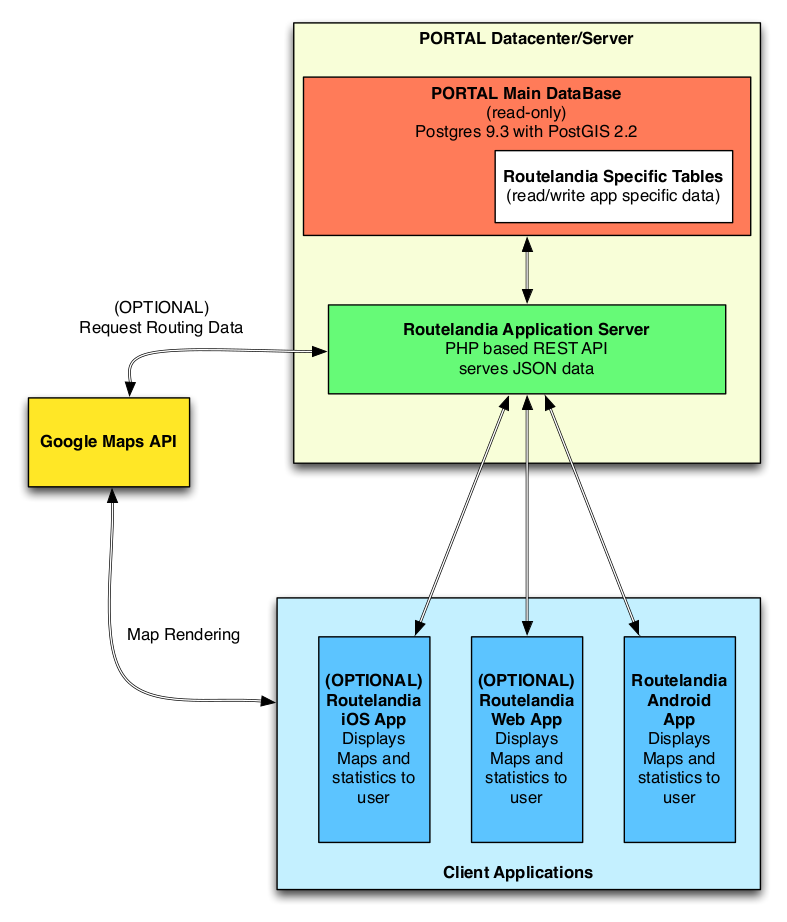

Routelandia
Project Introducton and Description
By: Jesse Wagner, Jon Donahue, Josh Proehl, Loc Le, Nasim Sanati, Peter Gicking, Rob Werfelmann
Where did we start?
- Interested in the data
- Team wanted experience with webapp developlemt
- Lots of freedom to make what we wanted
- Interesting puzzle/problem to solve
- Experienced and available sponsor
Data Available
TODO: Talk about what the data we had available was.
TODO: Data Source 1
TODO: Screenshot!
TODO: Data Source 2
TODO: Screenshot!
So what are we going to build?
- Route prediction based on highway ODOT data
- Select a highway and app will tell you when to leave
- PH
- PH
What does it look like?


Architecture
- Client's DB
- REST API
- Client Applications
Architecture Diagram
Anticipated Problems
TODO: Talk about things like trouble with route calculation? Wanted to do route calculation but we quickly discovered even in concept it would be too difficult for the amount of time we have available. Many team members not experienced with web dev which can lead to lots of little mistakes in code efficiency.Stretch Goals
- Error reporting (route taking longer than predicted)
- iOS
- Data gathering from users phone